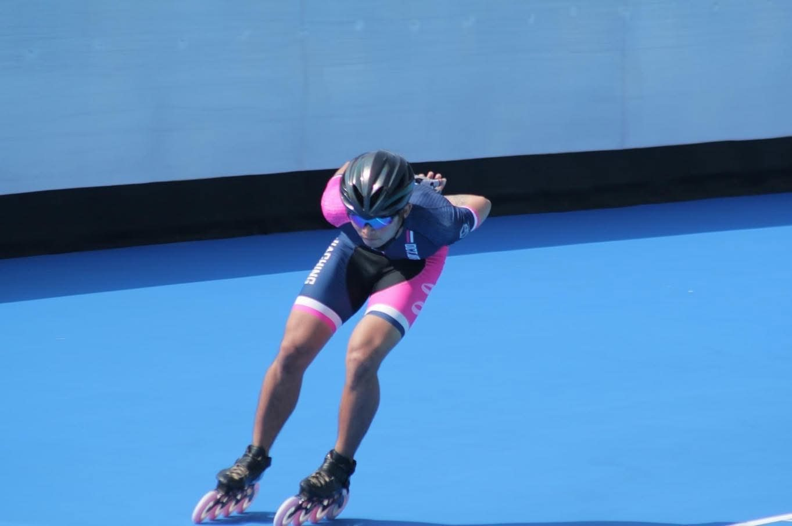
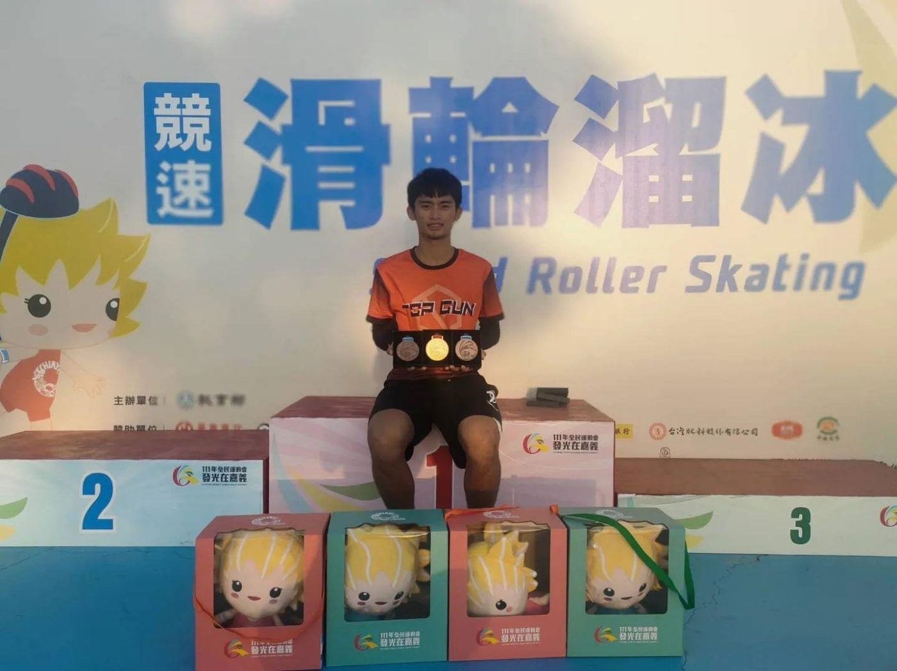
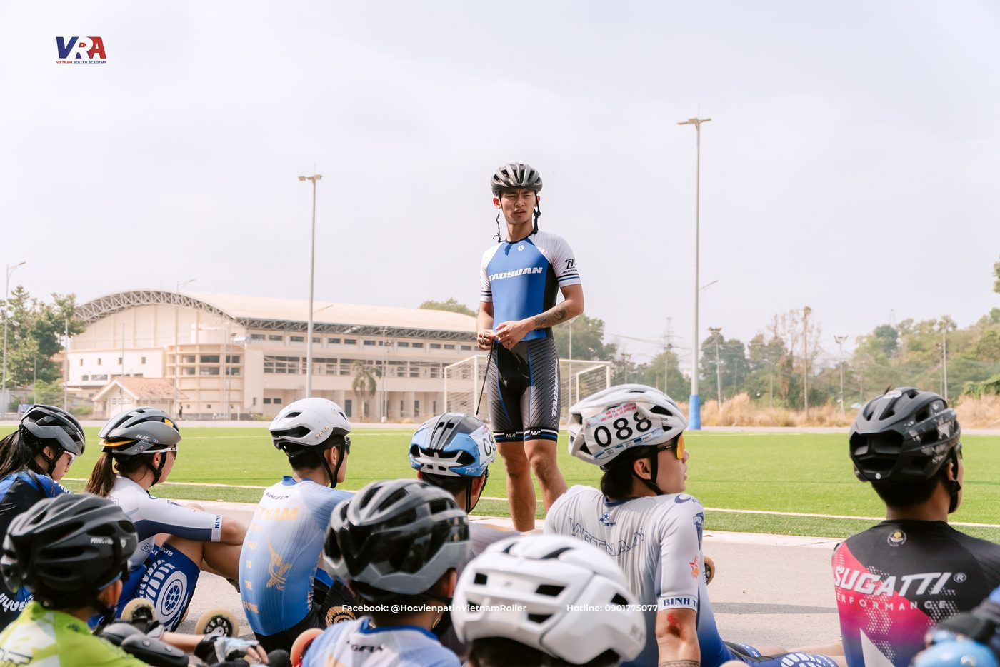

01我的故事
【我與滑輪溜冰的故事】
大家好，我是林家慶，目前是一名競速滑輪溜冰選手。
從小接觸滑輪溜冰到現在，這項運動已經陪伴我很多年，也成為我生活中非常重要的一部分。一路走來，爸爸一直都是我最大的支持者。他不一定懂所有比賽和技術，但他總是用自己的方式支持著我，讓我能夠放心追逐自己喜歡的事情。
【曾經迷惘，但沒有放棄】
在追逐夢想的過程中，我失去了父親。那段時間對我來說是很大的打擊，而在競技場上，我也曾因為一次次與國手資格擦肩而過而感到迷惘。
我曾經懷疑過自己是不是該繼續堅持下去，也曾思考過未來的方向。但每當想到過去和爸爸一起為比賽努力的日子，我還是決定繼續留在賽道上。因為我知道，熱愛從來沒有消失，而我也不想因為一時的挫折就放棄自己努力多年的目標。
【教學與交流的經驗】
除了持續投入訓練之外，目前我也在國小直排輪社團擔任教練，希望將自己的經驗分享給更多孩子。
過去也曾受越南團隊邀請前往當地進行交流與教學，讓我有機會接觸不同國家的訓練方式與文化，累積寶貴的國際交流經驗。
【努力累積，持續突破】
在求學與運動的道路上，我曾榮獲總統教育獎。這份榮譽對我來說不只是肯定，更是一種鼓勵，提醒我在面對挑戰時不要輕易放棄，持續朝自己的目標前進。
我始終相信，每一次訓練、每一場比賽，都是累積實力的重要過程。即使結果不一定總是如預期，但只要願意持續努力，就一定能離目標更近一步。
【未來的目標】
目前我的目標是穩定入選國家代表隊，爭取更多代表台灣參與國際賽事的機會。
我希望透過更多國內外比賽累積經驗，與不同國家的優秀選手交流競爭，持續提升自己的實力與視野。除了追求更好的成績之外，我也希望能透過自己的經驗與分享，讓更多人看見競速滑輪溜冰的魅力，以及台灣選手在這條道路上的努力與堅持。
未來的路還很長，但我會繼續一步一步向前，朝著自己的目標努力，也期待在賽道上創造更多屬於自己的故事。


